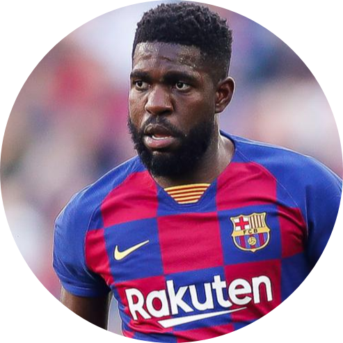

|
|  | Samuel Yves Um Titi, known as Samuel Umtiti, is a French professional footballer who plays as a centre-back for Spanish club Barcelona and the French national team. Umtiti began his professional career with Lyon in 2012, winning both the Coupe de France and Trophée des Champions in his first year. He totalled 170 games and three goals before a €25 million transfer to Barcelona in 2016. He went on to win the Copa del Rey in his first season in Spain and a La Liga and Cup double the following campaign.After winning 47 caps and scoring three goals at youth level, including winning the 2013 U-20 World Cup, Umtiti made his senior debut for France at Euro 2016, where they reached the final. Two years later, he was part of the squad that won the 2018 World Cup. |
||||||
BORN: |
14 NOVEMBER 1993 (age 26 years), |
PARENTS: |
ANNIE NGO UM |
||||
HEIGHT: |
1.82 m |
SALARY: |
1 MILLION EUR (2016) |
||||
NATIONALITY: |
CAMEROONIAN, FRENCH |
CURRENT TEAM: |
FC BARCELONA, FRENCH NATIONAL TEAM |
||||
| League | Matcehs | Goals | Assists | Yellow Cards | Red Cards |
| UEFA Champions League 2019-2020 |
3 | 0 | - | 0 | 0 |
| La Liga 2019-2020 |
13 | 0 | 0 | 6 | 0 |
| Joan Gamper Trophy 2019 |
1 | 0 | 0 | 0 | 0 |
| Copa del Rey 2018-2019 |
4 | 0 | - | 0 | 0 |
| Supercopa de Espana 2018 |
1 | 0 | 0 | 0 | 0 |